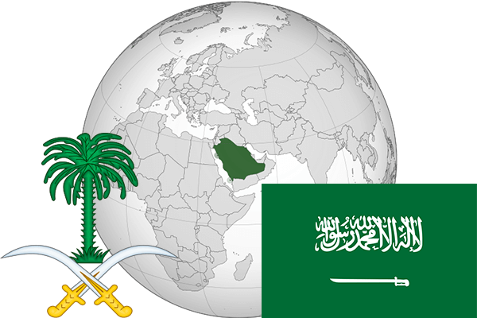

To`liq nomi: Saudiya Arabistoni Qirolligi
Region: Osiyoning janubi-gʻarbi
Qonunchilik shakli: Mutlaq teokratik monarxiya
Mustaqillik kuni: 23-sentyabr 1932
Poytaxt: Er-Riyod
Maydoni: 1,960,582 km²
Chegaradosh davlatlari: Iordaniya, Iroq, Quvayt, Qatar, BAA, Ummon, Yaman.
Aholisi: 31 521 418 (2015-yil)
Aholi zichligi: 12 /км²
Aholining o`rtacha yoshi: 74,50 yil
Rasmiy tili: Arab tili
Dini: Islom
Pul birligi: Saudiya riali
Telefon prefiksi: +966
Internet domen: .sa
Xalqaro tashkilotlarga a`zoligi: BMT, OPEK
Dengiz va okeanlarga chiqishi: Fors ko’rfazi
YIM: Butun: $689 mlrd.(2017-yil) Jon boshiga: $21,100
Yirik shaharlari: Er-Riyod, Jidda, Makka, Madina